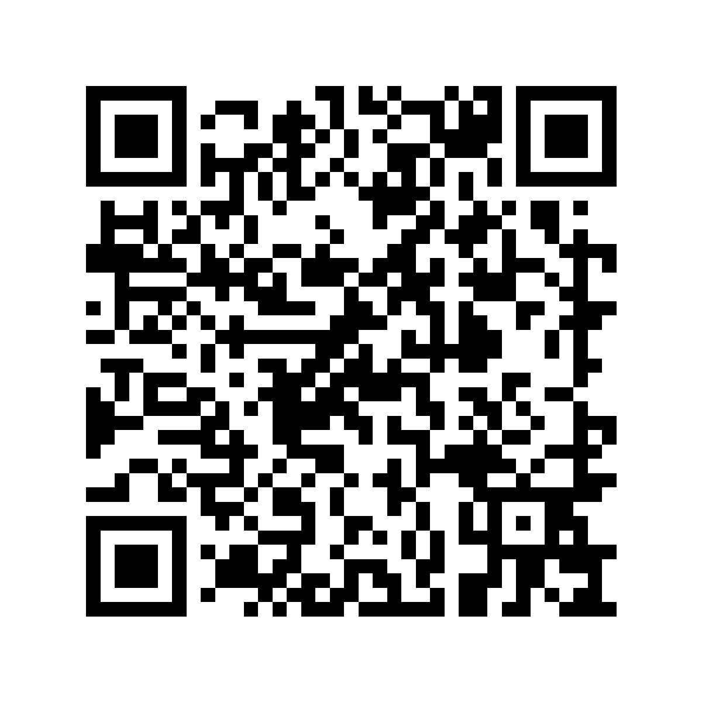

1
Encuentra y orienta el código
Los tres cuadrados grandes de las esquinas son patrones de posición. Indican dónde está el QR, su tamaño y cómo está girado.
Un último paso
Para mostrar la información de visitantes, este portal solicita tu correo y contraseña de empresa.
Los campos son solo una representación visual: no se puede escribir ni enviar información.
Simulación completada
La petición era inesperada. Una agenda no debería necesitar tu contraseña.
No comprobamos el destino. El dibujo del QR no dice quién está detrás.
El entorno daba confianza. Estar dentro de una oficina no hace seguro un código.
Antes de abrir un QR:
Si pide una contraseña, un pago o instalar algo, cierra la página y entra desde la aplicación oficial.
No se ha recogido ningún dato durante esta actividad.
Paso a paso
Es una manera de guardar información dentro de un dibujo de cuadrados. La cámara del móvil traduce ese dibujo para nosotros.
Piensa en el QR como en un sobre cerrado: por fuera no vemos el mensaje. Primero debemos leerlo para saber adónde quiere llevarnos.

La cámara encuentra esta dirección:
gft-seniors-day-qr.onrender.com
/prueba-qr-login/
Ahora el teléfono puede ofrecernos abrirla. Todavía podemos decir que no si la dirección no nos resulta conocida.
La cámara mira el dibujo de cuadrados.
El móvil lo traduce en un texto o una dirección.
Tú decides si quieres abrirla.
Contenido opcional
La cámara no reconoce palabras. Primero reconstruye una cuadrícula y después descodifica los ceros y unos siguiendo las reglas del QR.
Los tres cuadrados grandes de las esquinas son patrones de posición. Indican dónde está el QR, su tamaño y cómo está girado.
Si el código está inclinado, el teléfono corrige la perspectiva y calcula una cuadrícula recta antes de leer sus casillas.
Cada zona clara u oscura se interpreta siguiendo un orden. Después de retirar la máscara del QR, el resultado es una secuencia de ceros y unos.
1 0 1 1 0 0 1 0
El sistema Reed–Solomon puede recuperar parte de la información aunque el QR esté algo sucio o tapado. Finalmente agrupa los bits en bytes y obtiene el texto o la dirección web.
https://…
En resumen:
Localiza → endereza → lee los bits → corrige errores → muestra el destino.
El teléfono puede comprobar que el código está bien construido, pero no puede asegurar que la página de destino sea de confianza.